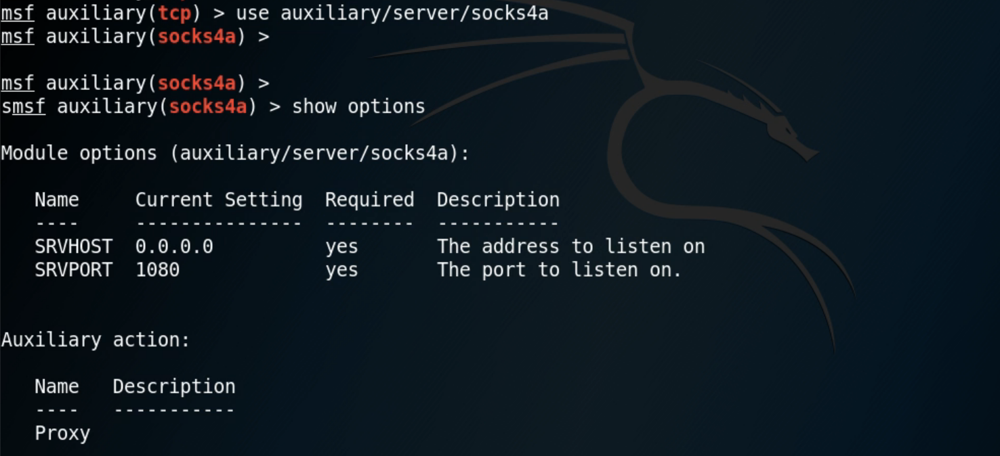
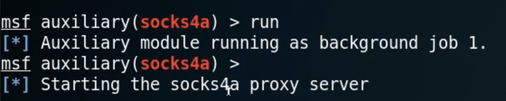
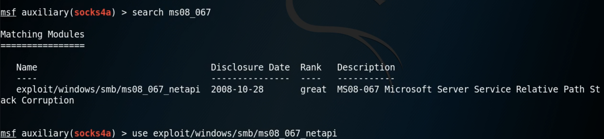

内网的跳板攻击与代理设置
使用MSF进行内网渗透
网络示意图
01 使用msf获取shell
生成后门程序，注意反弹IP要是公网IP，注意目标32位还是64位
设置payload，然后exploit
当前状态：攻击者（192.168.101.168）使用meterpreter与web服务器（192.168.31.164）获得了通信，但还无法访问内网（192.168.103.*）
02 跳板攻击与自动路由
- Pivoting
- 利用已经被入侵的主机作为跳板来攻击网络中的其他系统
- 访问由于路由问题而不能直接访问的内网系统
- 自动路由
- Run autoroute -s 192.168.103.0/24
- Run post/multi/manage/autoroute
- 扫描内网网络
- Run post/windows/gather/arp_scanner rhosts=192.168.103.0/24
- use auxiliary/scanner/portscan/tcp
操作过程
添加自动路由
使用-p查看路由表，成功获得了跳板
有了跳板之后，可以对内网进行扫描
TCP端口扫描
03 设置代理
要想使用msf之外的工具，需要设置代理
- Socket代理
- auxiliary/server/socks4a
- ProxyChains
- 任何TCP连接都可以通过TOR或者SOCKS4，SOCKS5，HTTP/HTTPS到达目的地，在这个通道技术中可以使用多个代理服务器，除此之外还提供匿名网络
操作过程
使用socket代理，配置选项

开启代理

配置proxychains
在末尾添加上使用的socks4代理
配置好之后即可使用nmap对内网进行扫描，查看是否存在ms08-067漏洞
使用msf进行攻击

注意payload要使用直连而非反弹shell，因为路由是单向的，靶机无法访问到攻击者主机
对内网攻击时，都是通过跳板，显示的攻击者IP是跳板机的IP
多级内网的情况
存在多级内网时，需要再次添加代理
设置代理
再添加一个端口
设置proxychains
之后就可以使用nmap进行扫描
本博客所有文章除特别声明外，均采用 CC BY-SA 3.0协议 。转载请注明出处！